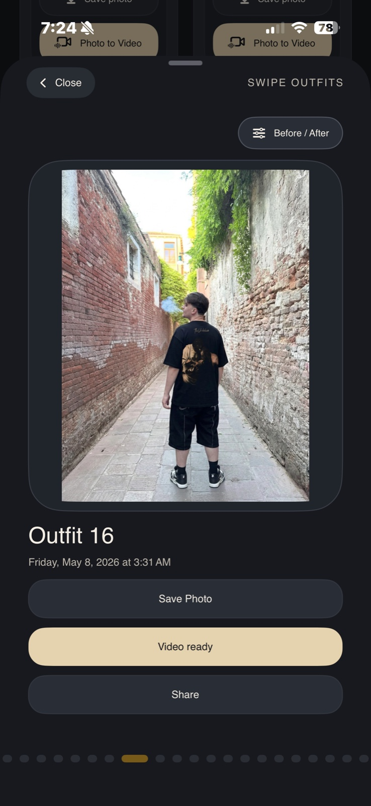

Încarcă hainele
Alege piese vestimentare din magazine online, social media ori poze salvate.
TryClothes
TryClothes este cabina ta de probă virtuală pentru haine. Vezi cum îți vin înainte să cumperi.


Virtual fitting room
Aplicatia analizează haine, pliuri, lumină și forma corpului.
Try-on ready
Ținute testate virtual, pregătite pentru garderoba ta.
Probă haine virtuală
TryClothes transformă o poză cu tine și orice articol vestimentar într-un preview curat, credibil și ușor de comparat.
Alege piese vestimentare din magazine online, social media ori poze salvate.
Aplicația citește proporțiile reale, postura și lumina ca proba virtuală să arate natural pe corpul tău.
Vezi cum îți vin hainele în câteva secunde, cu texturi, umbre și contur adaptate ținutei.
Cum funcționează
Interfața TryClothes este gândită pentru cumpărături online fără ghicit: probează haine, compară outfits și alege doar articole vestimentare care chiar arată bine pe tine.

Încarci o poză cu tine sau alegi un look salvat.
Selectezi haina pe care vrei să o vezi pe corp.
Compari rezultatul și păstrezi ținutele care merită.
Întrebări frecvente
Încarci o poză cu tine, alegi hainele sau clothes pe care vrei să le testezi, iar TryClothes generează o probă virtuală cu AI.
Da. Poți porni de la poze sau articole vestimentare salvate, apoi le poți vedea într-un preview realist pe corpul tău.
TryClothes analizează proporții, lumină, texturi și contur. Scopul este o probă de haine credibilă, nu o suprapunere rapidă.
Aplicația este pregătită pentru iOS în fază beta. Înscrie-te pe lista ca să probezi haine online înainte de lansarea publică.
Private beta
Locurile pentru Beta Privată sunt limitate. Intră pe lista și primești acces la TryClothes înainte de lansare.